1980's link, ET, sm3
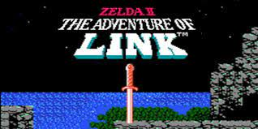
 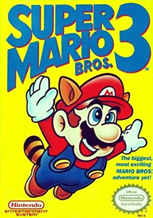
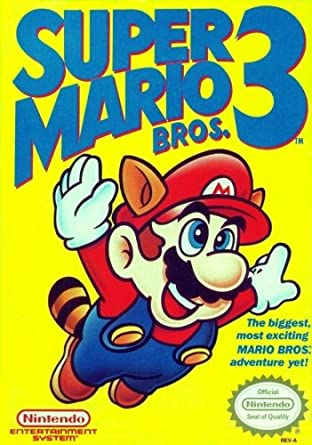
The 1980's games were full of fun and chaning times. Link was the first game i could save on, ET was the worst game to play but everyone wanted it, and Super Mario 3 was in my opinion the first game really reward the player with hidden serects.
1990's, sonic, castlevania sotn, mario 64
 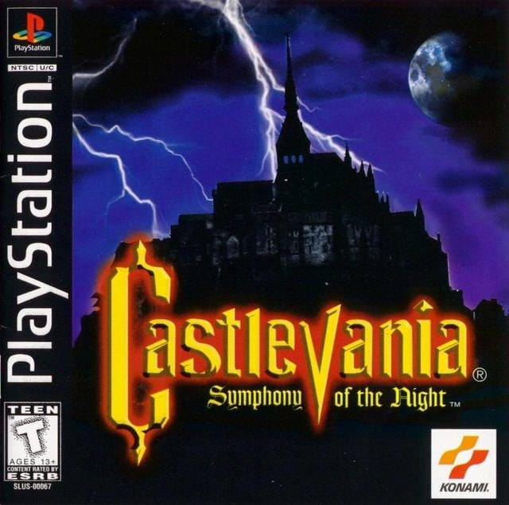
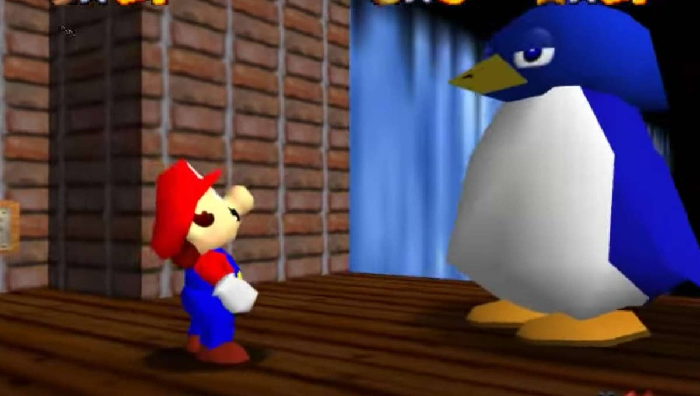
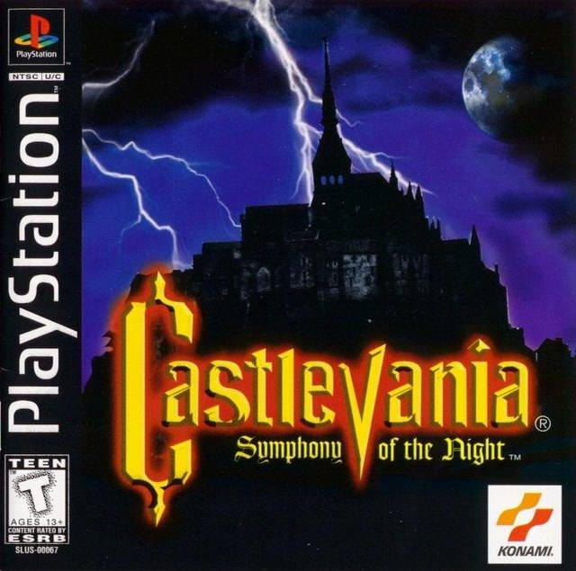
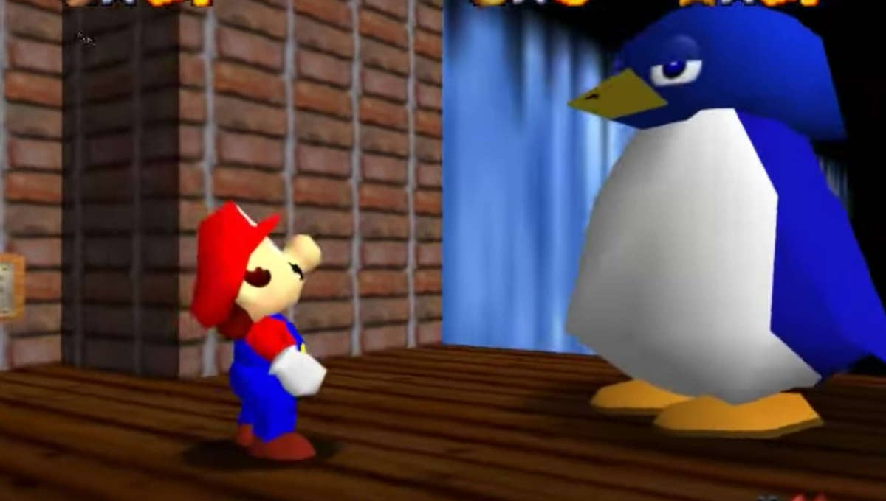
The 1990's brought in the console wars, and I sided with Sega, Sonic was a fast hyper fun game with a great sound track. After cutting my losses and going back to nitendo, Mario 64
gave me days of fun trying to find the 121 star. *yes I know it was myth*. Castlevania SOTN was the best for being able to play it and find ways to break the order and was the start of
subclass of games, the metrovanias.
2000's god of war, kingdom hearts, world of warcraft
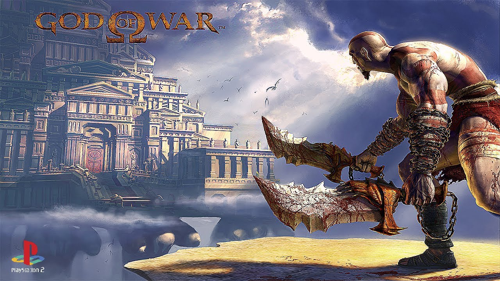
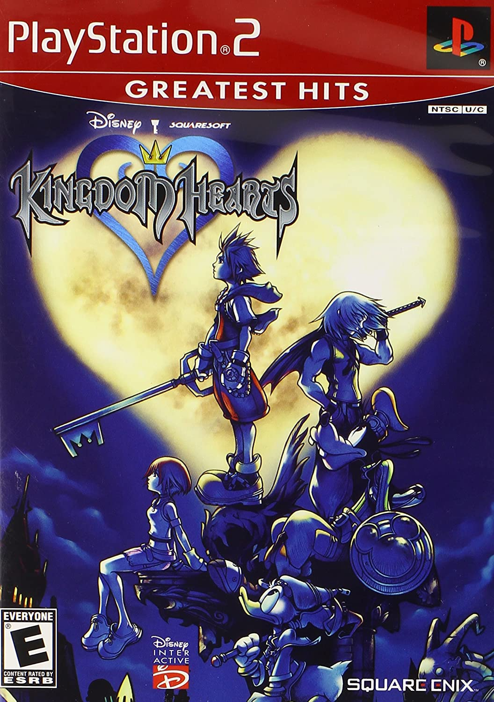

All of the games have a common thread of music, the 2000's really pushed what we expected to hear.
God of war, bought a new kind of action game, story telling and epic fights. Kingdom Hearts expaned on the normal open world and had one of the first huge list of
things todo for the best endings. I can't talk about games in the 2000's without talking about the game that defines MMORPG. WoW made video games as I see it, step up
and push for bigger worlds and better content to keep up.
2010's, witcher 3, red dead 2


I only had time for a few games in the past years, so I made it count. The 2010s brought us huge open world with endless side quest. Red Dead 2 and The Witcher 3 being the best
of them. A person could either finish the game or just do side quest for 100's of hours. Both games pushed what a game should be, so much so that new games are still being compaired to them.
class="comic">2020's final remake; resident evil
 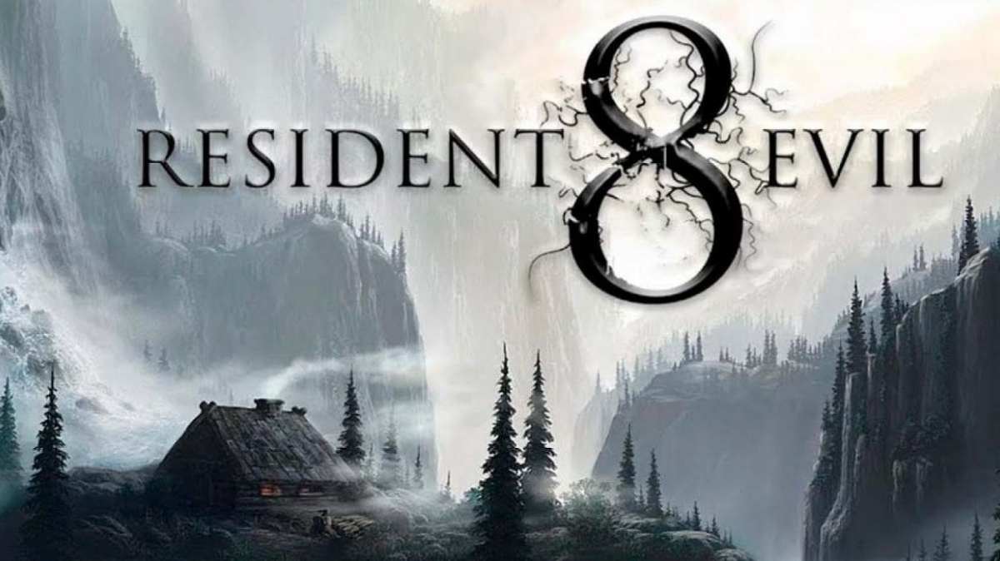
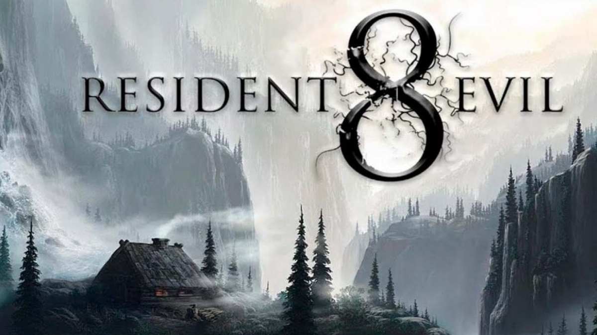
The 2020's are bringing with them the Nostalgia, Remakes and a return to the class play styles. With games being pushed to offer more than just size and scoop, I feel that
this next 10 years is going to bring old classics to life while improving them as well. Making FF7 not be turn based was a way to make it feel brand new. With Resident Evil
going back to the slow bulid up and not just a run and gun was brilant.